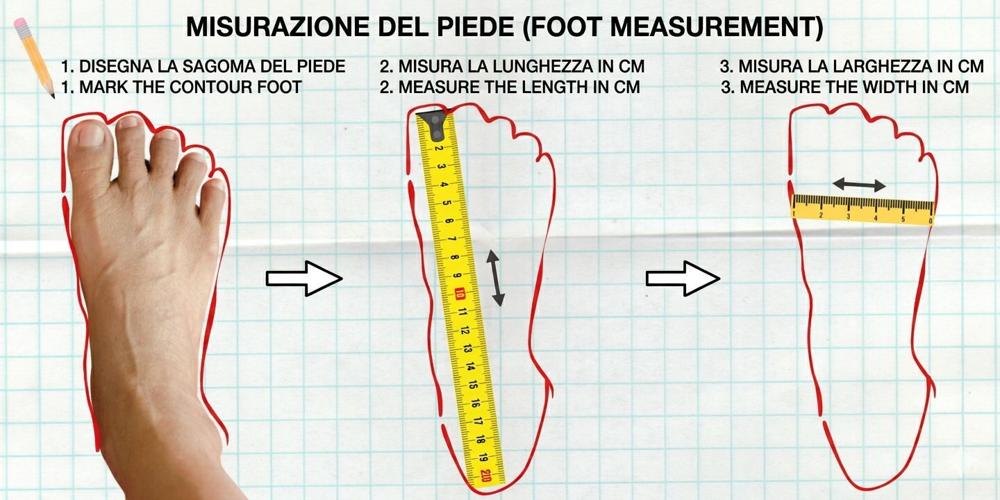

Calcola la tua taglia in 1 minuto
Guarda il video (1 minuto), poi usa il misuratore qui sotto.
Come prendere le misure

Misura entrambi i piedi e inserisci la misura del più lungo.
Prova ora il misuratore
Demo gratuita – nessun dato raccolto
✅ Footly non raccoglie dati e non richiede registrazione.